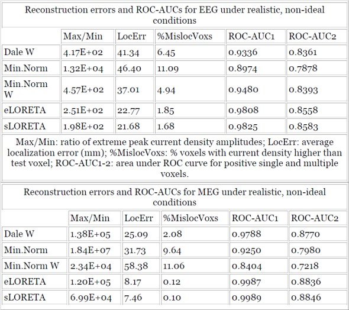
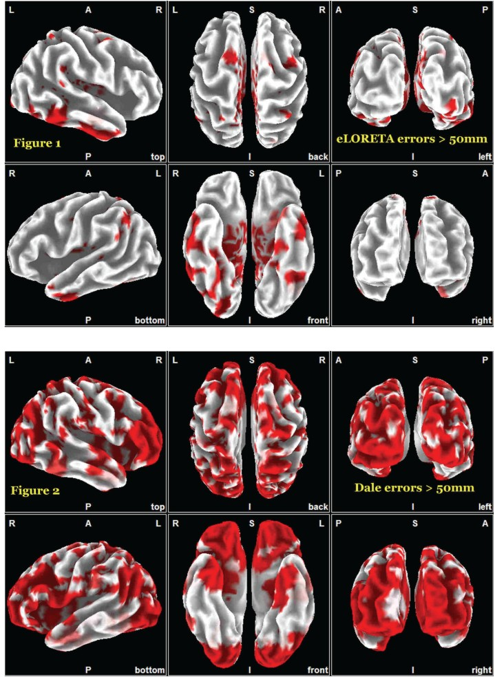

|
|
As of 2005-August-05, to the best of my (R.D. Pascual-Marqui) knowledge, this is the first ever 3D, discrete, distributed, linear solution to the inverse problem of EEG/MEG with exact localization (zero localization error). Previous best attempts were not solutions to the inverse problem (e.g. sLORETA), or were non-linear methods that were not solutions to the inverse problem (e.g. beamformers).With respect to 3D distributed, discrete, linear inverse solutions, we assert that: These assertions hold for as few as 19 electrodes/sensors, and with high SNR. Under realistic, non-ideal conditions (MNI152 template, 7002 voxels, 21 electrodes/sensors, with high noise, i.e. low SNR=10), the Tables summarize several measures of reconstruction error and performance based on ROC curves, for different tomographies: for "Dale W" see (Dale et al. 2000) and (Lin et al. 2006); for "Min.Norm" and "Min.Norm W" see (Lin et al. 2006); for sLORETA see (Pascual-Marqui 2002). In one group of experiments, 7002 test point sources were used; and in the other, 7002 randomly selected pairs. In general, sLORETA and eLORETA have similar performances, while they outperform all others. We emphasize that eLORETA has the advantage over sLORETA of being an authentic inverse solution.  For realistic, non-ideal conditions, Figures 1 and 2 show in red those cortical areas where localization error is larger than 50mm, for eLORETA and the Dale method.  References |